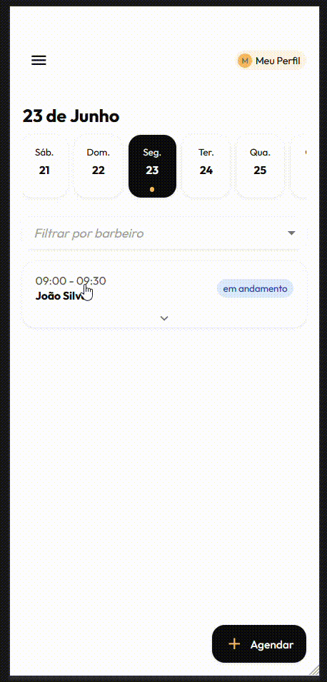
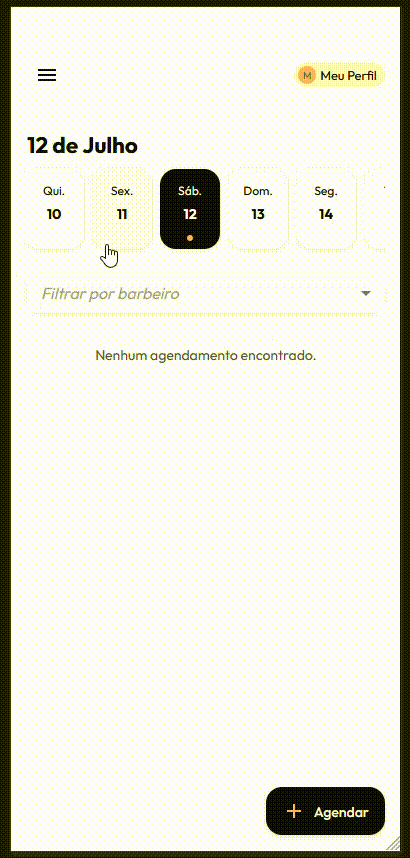

User Design - RAD
Representação
Mockups
Durante o início da fase de User Design, a equipe produziu mockups em baixa e média fidelidade utilizando a ferramenta Excalidraw, por sua leveza, foco na estrutura e agilidade na iteração. Esses mockups foram utilizados para representar visualmente as ideias discutidas nas fases de concepção e elaboração, com o objetivo de transformar requisitos abstratos em estruturas tangíveis, facilitando a comunicação entre a equipe e o cliente.
Figura 1 - Conjunto de mockups principais elaborados no Excalidraw

Os mockups incluíram telas como agendamento de clientes, fechamento de caixa, visualização de extratos e fluxo de navegação básico do sistema. Cada esboço foi pensado para representar a organização da informação, disposição dos elementos principais e fluxo esperado de interação. Foram exploradas opções de layout, agrupamento de ações, menus e chamadas para ações principais.
A aplicação dos mockups foi fundamental para antecipar dúvidas e para o alinhamento visual inicial. Eles foram apresentados em reuniões presenciais e discutidos com o cliente em tempo real, permitindo que feedbacks fossem registrados de forma imediata. A simplicidade da ferramenta também facilitou a colaboração durante os encontros, com ajustes feitos diretamente sobre os esboços.
Essa etapa também teve impacto direto na fase de análise e consenso da Engenharia de Requisitos: ao visualizar os mockups, tanto cliente quanto a equipe foram capazes de identificar elementos ausentes ou mal compreendidos, o que levou à criação e reformulação de algumas User Stories e critérios de aceitação.
Protótipos de Alta Fidelidade
Com base nos fluxos validados pelos mockups, a equipe desenvolveu protótipos de alta fidelidade diretamente em HTML, CSS e React, simulando a navegação do sistema sem integração com backend. Essa abordagem permitiu validar a interface e a usabilidade, além de possibilitar o reaproveitamento parcial do código na fase de construção, reduzindo retrabalho.
Os protótipos foram estruturados como uma aplicação front-end navegável, incluindo telas como agenda interativa, visualização de faturamento diário, extrato por funcionário e cadastros simulados. Durante reuniões de demonstração, a navegação em tempo real possibilitou a coleta imediata de feedback do cliente, gerando ajustes como reorganização de campos, reposicionamento de botões e redesenho de hierarquias de informação.
O desenvolvimento seguiu princípios de design centrado no usuário, fundamentados nas práticas recomendadas por Barbosa e Silva (2021)[1] e nas diretrizes do Material Design 3[2], que orientaram a identidade visual e o guia de estilo, assegurando consistência no produto.
|  |  |
|---|---|
{kind=link}
{kind=link}
Declaração
Criação/refinamento de US com base em feedback
- Com base nos feedbacks diretos obtidos nas reuniões com o cliente — especialmente após a entrega dos primeiros protótipos de alta fidelidade — refinamos e criamos novas User Stories. Esses ajustes foram baseados nas demandas emergentes durante a expansão da barbearia, como a necessidade de controle de caixa por um novo funcionário e a complexidade crescente na gestão dos serviços e comissões. A estrutura temática das US (Temas, Épicos e US específicas) foi constantemente atualizada para refletir essas mudanças, garantindo alinhamento com os objetivos de negócio.
Verificação e Validação
Feedback com o cliente
- Realizamos diversas validações com o cliente, como evidenciado nas atas das reuniões de 20/05 e 19/06, onde o protótipo foi aprovado e ajustes importantes foram solicitados com base na realidade operacional da barbearia, como o sistema de comissões diferenciadas, a taxa sobre o uso de cartões e o registro detalhado de pagamentos. A cada iteração, colhemos feedback qualitativo do proprietário Valder e sua equipe, o que nos permitiu ajustar o comportamento esperado das telas, fluxos e regras de negócio simuladas.
Organização e Atualização
Repriorização do Backlog
- A coleta contínua de percepções resultou em reestruturações no backlog por meio de repriorização dos requisitos com base em impacto e urgência. Após a prototipação, alguns requisitos originalmente considerados secundários passaram a ser tratados como essenciais — como a visualização detalhada do faturamento e o controle de forma de pagamento. Esse processo refletiu-se diretamente na atualização e priorização do backlog, com uso do modelo DEEP para manter o backlog detalhado, estimado, emergente e priorizado de forma estratégica.
Referências Bibliográficas
-
[1] BARBOSA, Simone; SILVA, Bruno. Interação Humano-Computador e Experiência do Usuário. 1. ed. Rio de Janeiro: Elsevier, 2021.
-
[2] GOOGLE. Material Design 3. Disponível em: https://m3.material.io. Acesso em: [data de acesso].
Histórico de Versão
| Data | Versão | Descrição | Autor |
|---|---|---|---|
| 11/05/2025 | 1.0 | Criação do documento | Weverton Rodrigues |